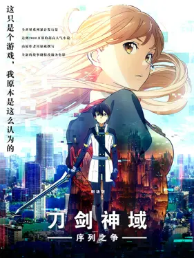

刀剑神域 序列之争
2022年，天才编程者茅场晶彦所开发的世界最早的完全潜行专用装备设备"NERvGear"。这个革命性的机器给VR（假想现实）世界带来了无限的可能性。那之后经过了4年......"NERvGear"的后继品VR机为了对抗"AmuSphere"（第二代民用完全潜行机），发售了一个次世代的可穿戴设备"Augma"，替换了完全潜行机能，是一个对AR（增强现实）功能进行了最大限度扩大的最先进机种。由于"Augma"在觉醒状态下也可以安全和便利地使用，因此一瞬间便在玩家当中传开了。这个杀手级内容，被叫做《Ordinal Scale序列之争（OS）》，是"Augma"专用的ARMMO RPG。亚丝娜和伙伴们会玩的这个游戏，桐人也准备参战了......
序列之争这部电影的内容几乎涵盖了除了UNDER WORLD 的内容之外的全部已经TV化的刀剑神域的内容，甚至在影片的最后，最终大决战的时候，所有在SAO ALO 中出现过的角色，桐人的朋友们，桐人的战友们，都来到了那个世界，一起参加最终的决战，为桐人的胜利贡献自己的一份力量。